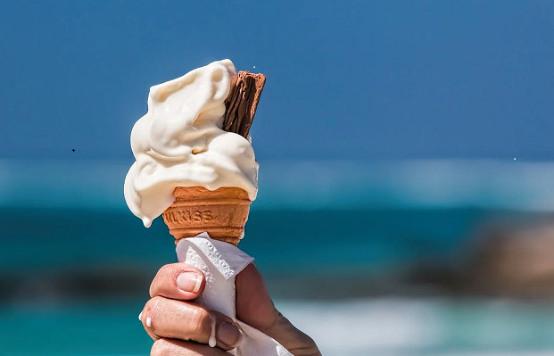
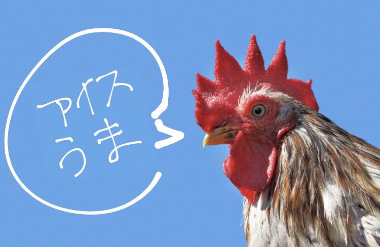

-----Gourment-----
ミハスには地中海料理、スペイン料理、郷土料理など様々な種類のレストランがあります。
パエリアやパスタと一緒に新鮮な海の幸が味わえます。
綺麗な景色と一緒に食べて、思い出に残るランチorディナーにしてはいかがですか？
また、街歩きに疲れたら甘くて美味しいアイスクリームで一休みするのもおすすめです。
アイスクリームの色をより一層鮮やかにさせる白い村を背景に1枚写真を撮って、SNSに投稿しちゃいましょう♪
